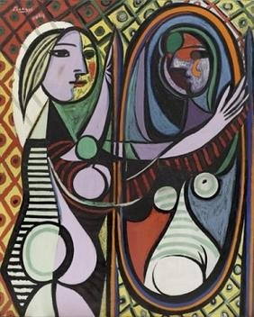

Girl before a Mirror
Pablo Picasso · 1932 · Oil on canvas · 162.3 × 130.2 cm · Museum of Modern Art, New York
In copyright. Look and learn: shown for study, not for download.
Picasso painted this on 14 March 1932, one of a long series that spring of Marie-Thérèse Walter, then twenty-two and his secret mistress while he was still married to Olga Khokhlova. Layers in the paint show he reworked it several times. He told Alfred Barr of the Museum of Modern Art that he preferred it to the others in the series, and it has belonged to that museum since 1938. Olga learned of the affair from the nude portraits he showed at his Galerie Georges Petit retrospective that October.